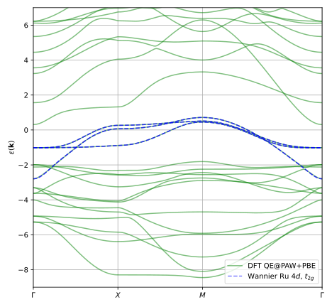

Spin susceptibility in Sr2RuO4
In this tutorial we will compute the static magnetic susceptibilitly \(\chi_{S_z S_z}(\mathbf{q})\) of the correlated Hund’s metal Sr2RuO4 withn dynamical mean field theory (DMFT), reproducing the results of PRB 100, 125120 (2019). We will use the reformulation of the (DMFT) lattice susceptibility in terms of the dual Bethe-Salpeter equation (DBSE) with \(1/N_\nu^3\) convergence with respect to the number of fermionic Matsubara frequencies \(N_\nu\), for details see arXiv 2306.05157.
The calculation is based on a Wannier model for the three bands crossing the Fermi level in Sr2RuO4. These bands have Ru-4d t2g symmetry and a Wannier interpolation with Wannier90 converges in just a few iterations, giving the band structure
see tight_binding_model.py using the Wannier90 output sro_hr.dat, sro.wout. The setup for producing these files using Quantum Espresso and Wannier90 is available in the TPRF repository under ./doc/user_guide/dmft_susceptibility_dbse/calc_dft.
The Wannier Hamiltonian is combined with a local Kanamori interaction with Hubbard \(U=2.4\) eV and Hund’s \(J=0.4\) eV and the self-consistent DMFT solution is determined using TRIQS/cthyb as impurity solver. The scripts for the DMFT solution are common.py and calc_sc_dmft.py.
Dual Bethe-Salpeter equation
In order to use the dual Bethe-Salpeter equation for computing the lattice susceptiblity we need to sample not one but three different kinds of two-particle correlators of the DMFT impurity problem.
The three frequency two particle Green’s function \(g^{(4)}_{abcd}(\omega, \nu, \nu')\)
The two frequency two particle Green’s function \(g^{(3)}_{abcd}(\omega, \nu)\)
The one frequency two particle Green’s function, a.k.a. the susceptiblity \(g^{(2)}_{abcd}(\omega) = X_{abcd}(\omega)\)
Since the hybridization function of the Sr2RuO4 impurity problem is diagonal due to symmetry, it is not possible to sample all spin-orbital components \(abcd\) of these correlators using partition function sampling Monte Carlo. Therefore we use the hybridization expansion with worm sampling as implemented in W2Dynamics to sample these correlators, using the TRIQS/w2dynamics_interface. The example scripts for the sampling are calc_g2.py, calc_tri.py, and calc_chi.py.
From \(g^{(4)}_{abcd}(\omega, \nu, \nu')\) we compute the impurity reducible vertex function \(F_{abcd}(\omega, \nu, \nu')\) and from \(g^{(3)}_{abcd}(\omega, \nu)\) the three point vertex function \(L_{abcd}(\omega, \nu)\) is obtained, see arXiv 2306.05157. Using the impurity susceptibility \(X_{abcd}(\omega)\), \(F\), and \(L\) the lattice susceptibility \(\chi\) is given by
where \(\tilde{\chi}^0\) is the dual bubble propagator constructed from the non-local part of the single particle Green’s function. Here is an example scirpt that performs these steps starting from the sampled propagators from W2Dynamics:
import time
import numpy as np
from h5 import HDFArchive
from triqs.gf import Gf, Fourier
from triqs.gf import make_gf_from_fourier
from triqs_tprf.lattice import lattice_dyson_g_wk
from triqs_tprf.bse import solve_lattice_bse
from triqs_tprf.bse import impurity_irreducible_vertex_Gamma
from triqs_tprf.dbse import solve_lattice_dbse
from triqs_tprf.dbse import impurity_reducible_vertex_F
from triqs_tprf.utilities import G2_loc_fixed_fermionic_window_python
from w2dyn_cthyb.converters_worm import p2_from_w2dyn_P2_worm_components
from w2dyn_cthyb.converters_worm import p2_remove_disconnected
from w2dyn_cthyb.converters_worm import p3_from_w2dyn_P3_worm_components
from w2dyn_cthyb.converters_worm import p3_w2dyn_to_triqs_freq_shift_alt
from w2dyn_cthyb.converters_worm import L_from_g3
from w2dyn_cthyb.converters_worm import g2_from_w2dyn_G2_worm_components
from tight_binding_model import tight_binding_model
def load_h5(filename):
print(f'--> Loading: {filename}')
with HDFArchive(filename, 'r') as a:
p = a['p']
return p
filename_sc = './data/data_sc.h5'
filename_chi = './data/data_chi.h5'
filename_tri = './data/data_tri.h5'
filename_g2 = './data/data_g2.h5'
print(f'--> Loading: {filename_sc}')
with HDFArchive(filename_sc, 'r') as a:
p = a['ps'][-1]
# Remove small (1e-6) off diagonal terms in e_k and g_w by hand
e_loc = np.sum(p.e_k.data, axis=0).real / p.e_k.data.shape[0]
e_loc -= np.diag(np.diag(e_loc))
p.e_k.data[:] -= e_loc[None, ...]
import itertools
for i, j in itertools.product(range(6), repeat=2):
if i != j:
p.g_w[i, j] = 0.
# Impurity susceptibility (one frequency)
p_chi = load_h5(filename_chi)
p2 = p2_from_w2dyn_P2_worm_components(p_chi.GF_worm_components, p.num_orbitals)
p.g_tau = make_gf_from_fourier(p.g_w)
p.chi_imp_w = p2_remove_disconnected(p2, p.g_tau)
# "Triangle" impurity two-particle Green's function (two frequencies)
p_tri = load_h5(filename_tri)
p3 = p3_from_w2dyn_P3_worm_components(p_tri.GF_worm_components, p.num_orbitals)
p3 = p3_w2dyn_to_triqs_freq_shift_alt(p3)
p.L_wn = L_from_g3(p3, p.g_w) # remove disconnected and amputate
# "Square" impurity two-particle Green's function (three frequencies)
p_g2 = load_h5(filename_g2)
p.g2_wnn = g2_from_w2dyn_G2_worm_components(
p_g2.G2_worm_components, p.num_orbitals)
# -- Lattice dispersion and Green's function
p.n_k = 16 # Set k-point resolution
H = tight_binding_model()
p.kmesh = H.get_kmesh(n_k = (p.n_k, p.n_k, p.n_k))
p.e_k = H.fourier(p.kmesh)
g_wk = lattice_dyson_g_wk(mu=p.mu, e_k=p.e_k, sigma_w=p.sigma_w)
# -- DBSE, BSE calculations for varying frequency window
for nwf in [40, 30, 20, 10]:
print('='*72)
print(f'nwf = {nwf}', flush=True)
p.nwf = nwf
g2_wnn = G2_loc_fixed_fermionic_window_python(p.g2_wnn, nwf=p.nwf)
print('--> DBSE')
p.F_wnn = impurity_reducible_vertex_F(p.g_w, g2_wnn)
p.chi_kw_dbse = solve_lattice_dbse(g_wk, p.F_wnn, p.L_wn, p.chi_imp_w)
print('--> BSE (for reference)')
Gamma_wnn = impurity_irreducible_vertex_Gamma(p.g_w, g2_wnn)
p.chi_kw_bse, p.chi0_kw = solve_lattice_bse(g_wk, Gamma_wnn)
filename_out = f'./data/data_bse_nwf_{nwf:03d}_nk_{p.n_k:03d}.h5'
print(f'--> Saving: {filename_out}')
with HDFArchive(filename_out, 'w') as a:
a['p'] = p
and also solves the traditional Bethe-Salpeter equation using the irreducible vertex \(\Gamma\) for comparison.
Solving both the dual Bethe-Salpeter equation (DBSE) and the Bethe-Salpeter equation (BSE) for a range of the Fermionic cut-off frequencies \(N_\nu\) (the number of frequencies \(\nu\) and \(\nu'\) used) shows the superior convergence property of the dual Bethe-Salpeter equation

see plot_dbse.py for the plot script.
Since the standard Bethe-Salpeter equation (BSE) only converges as \(1/N_\nu\) the calculations at \(N_\nu = 4, 8, 16\) are far from the \(N_\nu \rightarrow \infty\) limit and requires extrapolation in order to obtain a quantiative correct result. However, using the dual Bethe-Salpeter equation (DBSE) implementation we observe a drastically improved convergence rate and already at \(N_\nu=4\) the result is within 5% of the converged solution.
If you use the dual Bethe-Salpeter equation formulation in your work please cite arXiv 2306.05157.